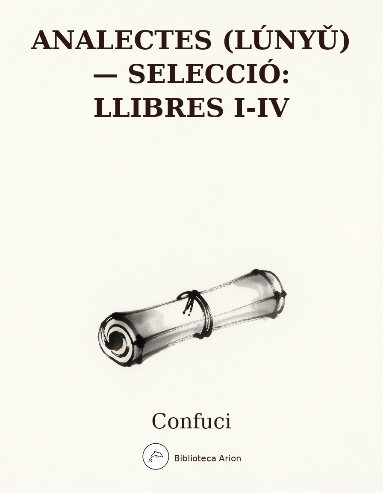

Analectes (Lúnyǔ) — selecció: Llibres I-IV
論語 (選：學而、為政、八佾、里仁)
Selecció dels quatre primers llibres dels Analectes (論語, Lúnyǔ), la compilació dels ensenyaments de Confuci recollits pels seus deixebles. Inclou temes fonamentals com l'aprenentatge, el govern, els ritus i la benevolència (仁, rén).
Llibre I · Xué ér (Aprendre)
學而第一
一之一
子曰：「學而時習之，不亦說乎？有朋自遠方來，不亦樂乎？人不知而不慍，不亦君子乎？」
一之二
有子曰：「其爲人也孝弟，而好犯上者，鮮矣；不好犯上，而好作亂者，未之有也。君子務本，本立而道生；孝弟也者，其爲仁之本與？」
一之三
子曰：「巧言令色，鮮矣仁。」
一之四
曾子曰：「吾日三省吾身：爲人謀而不忠乎？與朋友交而不信乎？傳不習乎？」
一之五
子曰：「道千乘之國，敬事而信，節用而愛人，使民以時。」
一之六
子曰：「弟子入則孝，出則弟，謹而信，汎愛眾，而親仁。行有餘力，則以學文。」
一之七
子夏曰：「賢賢易色；事父母，能竭其力；事君，能致其身；與朋友交，言而有信；雖曰未學，吾必謂之學矣。」
一之八
子曰：「君子不重則不威，學則不固。主忠信，無友不如己者，過則勿憚改。」
一之九
曾子曰：「愼終追遠，民德歸厚矣。」
一之十
子禽問於子貢曰：「夫子至於是邦也，必聞其政，求之與？抑與之與？」子貢曰：「夫子溫、良、恭、儉、讓以得之。夫子之求之也，其諸異乎人之求之與？」
一之十一
子曰：「父在觀其志，父沒觀其行。三年無改於父之道，可謂孝矣。」
一之十二
有子曰：「禮之用，和爲貴。先王之道，斯爲美，小大由之。有所不行，知和而和，不以禮節之，亦不可行也。」
一之十三
有子曰：「信近於義，言可復也；恭近於禮，遠恥辱也。因不失其親，亦可宗也。」
一之十四
子曰：「君子食無求飽，居無求安，敏於事而愼於言，就有道而正焉：可謂好學。」
一之十五
子貢曰：「貧而無諂，富而無驕，何如？」子曰：「可也。未若貧而樂，富而好禮者也。」子貢曰：「《詩》云：『如切如磋，如琢如磨。』其斯之謂與？」子曰：「賜也，始可與言《詩》已矣！告諸往而知來者。」
一之十六
子曰：「不患人之不己知，患不知人也。」
Llibre II · Wéi zhèng (Governar)
為政第二
二之一
子曰：「爲政以德，譬如北辰，居其所而眾星共之。」
二之二
子曰：「《詩》三百，一言以蔽之，曰：『思無邪。』」
二之三
子曰：「道之以政，齊之以刑，民免而無恥；道之以德，齊之以禮，有恥且格。」
二之四
子曰：「吾十有五而志于學，三十而立，四十而不惑，五十而知天命，六十而耳順，七十而從心所欲不踰矩。」
二之五
孟懿子問孝。子曰：「無違。」樊遲御，子告之曰：「孟孫問孝於我，我對曰：『無違。』」樊遲曰：「何謂也？」子曰：「生，事之以禮；死，葬之以禮，祭之以禮。」
二之六
孟武伯問孝。子曰：「父母唯其疾之憂。」
二之七
子游問孝。子曰：「今之孝者，是謂能養。至於犬馬，皆能有養；不敬，何以別乎？」
二之八
子夏問孝。子曰：「色難。有事弟子服其勞，有酒食先生饌，曾是以爲孝乎？」
二之九
子曰：「吾與回言終日，不違如愚。退而省其私，亦足以發。回也不愚。」
二之十
子曰：「視其所以，觀其所由，察其所安。人焉廋哉？人焉廋哉？」
二之十一
子曰：「溫故而知新，可以爲師矣。」
二之十二
子曰：「君子不器。」
二之十三
子貢問君子。子曰：「先行其言，而後從之。」
二之十四
子曰：「君子周而不比，小人比而不周。」
二之十五
子曰：「學而不思則罔，思而不學則殆。」
二之十六
子曰：「攻乎異端，斯害也已。」
二之十七
子曰：「由！誨女知之乎？知之爲知之，不知爲不知，是知也！」
二之十八
子張學干祿。子曰：「多聞闕疑，慎言其餘，則寡尤；多見闕殆，慎行其餘，則寡悔。言寡尤，行寡悔，祿在其中矣。」
二之十九
哀公問曰：「何爲則民服？」孔子對曰：「舉直錯諸枉，則民服；舉枉錯諸直，則民不服。」
二之二十
季康子問：「使民敬、忠以勸，如之何？」子曰：「臨之以莊則敬，孝慈則忠，舉善而教不能則勸。」
二之二一
或謂孔子曰：「子奚不爲政？」子曰：「《書》云：『孝乎！惟孝，友于兄弟，施於有政。』是亦爲政，奚其爲爲政？」
二之二二
子曰：「人而無信，不知其可也。大車無輗，小車無軏，其何以行之哉？」
二之二三
子張問：「十世可知也？」子曰：「殷因於夏禮，所損益可知也；周因於殷禮，所損益可知也。其或繼周者，雖百世可知也。」
二之二四
子曰：「非其鬼而祭之，諂也。見義不爲，無勇也。」
Llibre III · Bā yì (Vuit fileres de dansaires)
八佾第三
三之一
孔子謂季氏：「八佾舞於庭。是可忍也，孰不可忍也！」
三之二
三家者，以雍徹。子曰：「『相維辟公，天子穆穆。』奚取於三家之堂？」
三之三
子曰：「人而不仁，如禮何？人而不仁，如樂何？」
三之四
林放問禮之本。子曰：「大哉問！禮，與其奢也，寧儉；喪，與其易也，寧戚。」
三之五
子曰：「夷狄之有君，不如諸夏之亡也。」
三之六
季氏旅於泰山。子謂冉有曰：「女弗能救與？」對曰：「不能。」子曰：「嗚呼！曾謂泰山不如林放乎？」
三之七
子曰：「君子無所爭，必也射乎！揖讓而升，下而飮，其爭也君子。」
三之八
子夏問曰：「『巧笑倩兮，美目盼兮，素以爲絢兮。』何謂也？」子曰：「繪事後素。」曰：「禮後乎？」子曰：「起予者商也，始可與言《詩》已矣。」
三之九
子曰：「夏禮，吾能言之，杞不足徵也；殷禮，吾能言之，宋不足徵也。文獻不足故也，足，則吾能徵之矣。」
三之十
子曰：「禘自既灌而往者，吾不欲觀之矣。」
三之十一
或問「禘」之說。子曰：「不知也。知其說者之於天下也，其如示諸斯乎？」指其掌。
三之十二
祭如在，祭神如神在。子曰：「吾不與祭，如不祭。」
三之十三
王孫賈問曰：「『與其媚於奧，寧媚於竈。』何謂也？」子曰：「不然。獲罪於天，無所禱也。」
三之十四
子曰：「周監於二代，郁郁乎文哉！吾從周。」
三之十五
子入太廟，每事問。或曰：「孰謂鄹人之子知禮乎？入太廟，每事問。」子聞之曰：「是禮也！」
三之十六
子曰：「射不主皮，爲力不同科，古之道也。」
三之十七
子貢欲去告朔之餼羊。子曰：「賜也！爾愛其羊，我愛其禮。」
三之十八
子曰：「事君盡禮，人以爲諂也。」
三之十九
定公問：「君使臣，臣事君，如之何？」孔子對曰：「君使臣以禮，臣事君以忠。」
三之二十
子曰：「《關雎》，樂而不淫，哀而不傷。」
三之二一
哀公問社於宰我。宰我對曰：「夏后氏以松，殷人以柏，周人以栗。曰：『使民戰栗。』」子聞之，曰：「成事不說，遂事不諫，既往不咎。」
三之二二
子曰：「管仲之器小哉！」或曰：「管仲儉乎？」曰：「管氏有三歸，官事不攝，焉得儉？然則管仲知禮乎？」曰：「邦君樹塞門，管氏亦樹塞門。邦君爲兩君之好，有反坫，管氏亦有反坫。管氏而知禮，孰不知禮？」
三之二三
子語魯大師樂，曰：「樂其可知。始作，翕如也。從之，純如也，皦如也，繹如也。以成。」
三之二四
儀封人請見，曰：「君子之至於斯，吾未嘗不得見也。」從者見之。出曰：「二三子，何患於喪乎？天下之無道也久矣，天將以夫子爲木鐸。」
三之二五
子謂韶：「盡美矣，又盡善也。」謂武：「盡美矣，未盡善也。」
三之二六
子曰：「居上不寬，爲禮不敬，臨喪不哀，吾何以觀之哉！」
Llibre IV · Lǐ rén (La benevolència en la comunitat)
里仁第四
四之一
子曰：「里仁爲美。擇不處仁，焉得知？」
四之二
子曰：「不仁者，不可以久處約，不可以長處樂。仁者安仁，知者利仁。」
四之三
子曰：「惟仁者能好人，能惡人。」
四之四
子曰：「苟志於仁矣，無惡也。」
四之五
子曰：「富與貴，是人之所欲也，不以其道得之，不處也。貧與賤，是人之所惡也；不以其道得之，不去也。君子去仁，惡乎成名？君子無終食之閒違仁，造次必於是，顛沛必於是。」
四之六
子曰：「我未見好仁者，惡不仁者。好仁者，無以尙之；惡不仁者，其爲仁矣。不使不仁者加乎其身。有能一日用其力於仁矣乎？我未見力不足者！蓋有之矣，我未之見也。」
四之七
子曰：「人之過也，各於其黨。觀過，斯知仁矣。」
四之八
子曰：「朝聞道，夕死可矣！」
四之九
子曰：「士志於道，而恥惡衣惡食者，未足與議也！」
四之十
子曰：「君子之於天下也，無適也，無莫也，義之與比。」
四之十一
子曰：「君子懷德，小人懷土；君子懷刑，小人懷惠。」
四之十二
子曰：「放於利而行，多怨。」
四之十三
子曰：「能以禮讓爲國乎，何有？不能以禮讓爲國，如禮何？」
四之十四
子曰：「不患無位，患所以立。不患莫己知，求爲可知也。」
四之十五
子曰：「參乎！吾道一以貫之。」曾子曰：「唯。」子出，門人問曰：「何謂也？」曾子曰：「夫子之道，忠恕而已矣！」
四之十六
子曰：「君子喻於義，小人喻於利。」
四之十七
子曰：「見賢思齊焉，見不賢而內自省也。」
四之十八
子曰：「事父母幾諫；見志不從，又敬而不違，勞而不怨。」
四之十九
子曰：「父母在，不遠遊；遊必有方。」
四之二十
子曰：「三年無改於父之道，可謂孝矣。」
四之二一
子曰：「父母之年，不可不知也。一則以喜，一則以懼。」
四之二二
子曰：「古者言之不出，恥躬之不逮也。」
四之二三
子曰：「以約失之者，鮮矣。」
四之二四
子曰：「君子欲訥於言而敏於行。」
四之二五
子曰：「德不孤，必有鄰。」
四之二六
子游曰：「事君數，斯辱矣。朋友數，斯疏矣。」
Llibre I · Aprendre (學而)
1.1
El Mestre digué: «Aprendre i posar-ho en pràctica al moment oportú, no és font d’alegria? Que vinguin amics de terres llunyanes, no és motiu de goig? Que els altres no et reconeguin i no t’amargar per això, no és propi de l’home exemplar?»
1.2
Mestre Yǒu digué: «Qui és pietós amb els pares i respectuós amb els germans grans, i tanmateix li agrada rebel·lar-se contra els superiors, és ben rar. Qui no li agrada rebel·lar-se contra els superiors i tanmateix li agrada provocar desordre, no n’hi ha hagut mai cap. L’home exemplar s’aplica a l’essencial; quan l’essencial està establert, el Camí neix. La pietat filial i el respecte fraternal, no són ells el fonament de la benevolència?»
1.3
El Mestre digué: «Paraules enginyoses i expressió afectada: rara és la benevolència en qui fa això.»
1.4
Mestre Zēng digué: «Cada dia examino tres vegades la meva conducta: en les tasques que he fet per altri, he estat lleial? En el tracte amb els amics, he estat fidel? Allò que m’han transmès, ho he posat en pràctica?»
1.5
El Mestre digué: «Per governar un estat de mil carros de guerra: sigues respectuós en els afers i fidel a la paraula, fes estalvi i estima les persones, empra el poble en el moment adequat.»
1.6
El Mestre digué: «El jove, a casa, sigui pietós; fora, sigui respectuós. Sigui prudent i fidel, estimi tothom i s’acosti als benevolents. Si li queden forces després de fer tot això, que les dediqui a l’estudi de les lletres.»
1.7
Zǐxià digué: «Qui valora la virtut com altres valoren la bellesa; qui serveix els pares esgotant les seves forces; qui serveix el sobirà lliurant-se del tot; qui en el tracte amb els amics compleix la paraula: per més que diguin que no ha estudiat, jo afirmo que sí que ha après.»
1.8
El Mestre digué: «Si l’home exemplar no és seriós, no inspira respecte, i el que aprèn no serà sòlid. Posa per davant la lleialtat i la fiabilitat. No facis amistat amb qui sigui inferior a tu. Si comets un error, no tinguis por de corregir-lo.»
1.9
Mestre Zēng digué: «Si es tracten amb cura els funerals i es commemoren els avantpassats llunyans, la virtut del poble s’enfortirà.»
1.10
Zǐqín preguntà a Zǐgòng: «Quan el Mestre arriba a un país, sempre s’informa del seu govern. Ho demana ell, o li ho ofereixen?» Zǐgòng respongué: «El Mestre ho obté per la seva afabilitat, senzillesa, respecte, frugalitat i modèstia. La manera com ho busca el Mestre, no és ben diferent de com ho busquen els altres?»
1.11
El Mestre digué: «Mentre el pare és viu, observa les intencions del fill. Quan el pare ha mort, observa les accions del fill. Si durant tres anys no canvia el camí del pare, se’l pot considerar pietós.»
1.12
Mestre Yǒu digué: «En la pràctica dels ritus, l’harmonia és el més preuat. El camí dels reis antics era bell justament per això, i en les coses grans i petites el seguien. Però hi ha casos en què no funciona: si cerques l’harmonia per l’harmonia, sense regular-la amb els ritus, tampoc no funciona.»
1.13
Mestre Yǒu digué: «Si la fiabilitat s’acosta a la justícia, la paraula pot ser complida. Si el respecte s’acosta als ritus, s’allunya de la vergonya i la humiliació. Si un no perd els seus referents, se’l pot prendre com a model.»
1.14
El Mestre digué: «L’home exemplar, en menjar, no busca la sacietat; en l’habitatge, no busca la comoditat. És diligent en els afers i prudent en les paraules. S’acosta a qui posseeix el Camí per corregir-se: d’ell es pot dir que estima l’estudi.»
1.15
Zǐgòng preguntà: «Ser pobre sense ser adulador, ser ric sense ser arrogant: què us en sembla?» El Mestre respongué: «Pot passar. Però no val tant com ser pobre i trobar-hi alegria, ser ric i estimar els ritus.» Zǐgòng digué: «Les Odes diuen: “Com qui talla i llima, com qui esculpeix i poleix.” No és això el que voleu dir?» El Mestre digué: «Cì, amb tu ja puc parlar de les Odes! T’explico el passat i en dedueixes el futur.»
1.16
El Mestre digué: «No et preocupis que els altres no et coneguin; preocupa’t de no conèixer els altres.»
Llibre II · Governar (為政)
2.1
El Mestre digué: «Governar amb la virtut és com l’estel polar: ocupa el seu lloc i tots els estels giren al seu entorn.»
2.2
El Mestre digué: «Les tres-centes Odes es resumeixen en una sola frase: “El pensament no es desvia.”»
2.3
El Mestre digué: «Si guies el poble amb lleis i l’ordenes amb càstigs, el poble les evitarà però no tindrà vergonya. Si el guies amb la virtut i l’ordenes amb els ritus, tindrà vergonya i, a més, es reformarà.»
2.4
El Mestre digué: «Als quinze anys, vaig orientar la voluntat cap a l’estudi. Als trenta, m’hi vaig establir ferm. Als quaranta, ja no tenia dubtes. Als cinquanta, vaig conèixer el mandat del Cel. Als seixanta, el meu oïda era dòcil. Als setanta, seguia els desigs del cor sense traspassar cap norma.»
2.5
Mèng Yìzǐ preguntà sobre la pietat filial. El Mestre digué: «No contravenir.» Fán Chí conduïa el carro, i el Mestre li digué: «Mèng Sūn m’ha preguntat sobre la pietat filial i li he respost: “No contravenir.”» Fán Chí preguntà: «Què voleu dir?» El Mestre digué: «En vida, servir-los segons els ritus; en la mort, enterrar-los segons els ritus, fer-los ofrenes segons els ritus.»
2.6
Mèng Wǔbó preguntà sobre la pietat filial. El Mestre digué: «Que els pares només hagin de preocupar-se per la malaltia del fill.»
2.7
Zǐyóu preguntà sobre la pietat filial. El Mestre digué: «Avui dia diuen que ser pietós és alimentar els pares. Però fins i tot els gossos i els cavalls reben aliment. Si no hi ha respecte, quina diferència hi ha?»
2.8
Zǐxià preguntà sobre la pietat filial. El Mestre digué: «El difícil és l’expressió del rostre. Quan hi ha feina, els joves s’hi posen; quan hi ha menjar i vi, els serveixen als grans: es pot considerar que això sol sigui pietat filial?»
2.9
El Mestre digué: «Parlo amb Huí tot el dia i ell no m’objecciona mai, com si fos un ximple. Però quan se’n va i examino la seva conducta privada, veig que és ben capaç de posar en pràctica el que li he dit. Huí no és gens ximple.»
2.10
El Mestre digué: «Observa per què actua, examina per quins mitjans ho fa, indaga en què troba repòs. Com pot una persona amagar-se? Com pot una persona amagar-se?»
2.11
El Mestre digué: «Qui repassa allò antic i en descobreix coses noves, pot ser mestre.»
2.12
El Mestre digué: «L’home exemplar no és un estri.»
2.13
Zǐgòng preguntà sobre l’home exemplar. El Mestre digué: «Primer posa en pràctica el que vol dir, i després ho diu.»
2.14
El Mestre digué: «L’home exemplar és universal i no és partidista; l’home mesquí és partidista i no és universal.»
2.15
El Mestre digué: «Aprendre sense reflexionar és inútil; reflexionar sense aprendre és perillós.»
2.16
El Mestre digué: «Dedicar-se a doctrines heterodoxes: això sí que és perjudicial.»
2.17
El Mestre digué: «Yóu! Vols que t’ensenyi què és el coneixement? Saber el que saps i saber el que no saps: això és el coneixement.»
2.18
Zǐzhāng estudiava com obtenir un càrrec. El Mestre digué: «Escolta molt, deixa de banda els dubtes, i parla amb cautela de la resta: tindràs poques faltes. Observa molt, deixa de banda els perills, i actua amb cautela en la resta: tindràs pocs penediments. Poques faltes en les paraules, pocs penediments en les accions: el càrrec vindrà sol.»
2.19
El duc Āi preguntà: «Què he de fer perquè el poble obeeixi?» Confuci respongué: «Si promous els rectes i els poses per damunt dels tortuosos, el poble obeeix. Si promous els tortuosos i els poses per damunt dels rectes, el poble no obeeix.»
2.20
Jì Kāngzǐ preguntà: «Com aconseguir que el poble sigui respectuós, lleial i s’esforci?» El Mestre digué: «Si et presentes davant d’ell amb dignitat, et respectarà. Si ets pietós amb els pares i generós amb els fills, et serà lleial. Si promous els bons i instruïs els incapaços, s’esforçarà.»
2.21
Algú digué a Confuci: «Per què no us dediqueu al govern?» El Mestre digué: «El Llibre dels Documents diu: “Pietat filial! Només la pietat filial i l’amistat amb els germans: això s’estén al govern.” Això ja és governar. Per què caldria exercir un càrrec?»
2.22
El Mestre digué: «Una persona sense fiabilitat, no sé com se les pot arreglar. Un carro gran sense passador, un carro petit sense travesser: com pot avançar?»
2.23
Zǐzhāng preguntà: «Es pot conèixer el que passarà d’aquí a deu generacions?» El Mestre digué: «La dinastia Yīn va adoptar els ritus de la Xià: el que hi va afegir i el que hi va treure es pot saber. La dinastia Zhōu va adoptar els ritus de la Yīn: el que hi va afegir i el que hi va treure es pot saber. Qui succeeixi la Zhōu, ni que siguin cent generacions, es podrà saber.»
2.24
El Mestre digué: «Fer sacrificis a esperits que no són els teus avantpassats és adulació. Veure la justícia i no actuar és covardia.»
Llibre III · Vuit fileres de dansaires (八佾)
3.1
Confuci digué de la família Jì: «Vuit fileres de dansaires ballant al seu pati! Si això es pot tolerar, què no es pot tolerar?»
3.2
Les tres famílies feien servir l’himne Yōng per retirar les ofrenes. El Mestre digué: «”Els prínceps assisteixen, el Fill del Cel, majestuós.” Què hi té a veure això amb les sales de les tres famílies?»
3.3
El Mestre digué: «Si una persona no té benevolència, què pot fer amb els ritus? Si una persona no té benevolència, què pot fer amb la música?»
3.4
Lín Fàng preguntà sobre l’essència dels ritus. El Mestre digué: «Gran pregunta! En els ritus, millor l’austeritat que l’ostentació. En els funerals, millor l’aflicció que la cerimònia.»
3.5
El Mestre digué: «Els pobles bàrbars amb sobirà estan pitjor que els pobles de la Xina sense.»
3.6
La família Jì va fer un sacrifici al mont Tài. El Mestre digué a Rǎn Yǒu: «No ho pots evitar?» Respongué: «No puc.» El Mestre digué: «Ai! ¿Diríeu que el mont Tài sap menys dels ritus que Lín Fàng?»
3.7
El Mestre digué: «L’home exemplar no competeix amb ningú. Si de cas, en el tir amb arc! Es saluden amb cortesia en pujar, baixen i beuen junts: la seva competició és pròpia de l’home exemplar.»
3.8
Zǐxià preguntà: «”El somriure encisador, els ulls bell mirar, la base clara que s’enjoia.” Què vol dir això?» El Mestre digué: «La pintura ve després de preparar la tela en blanc.» Digué: «Aleshores, els ritus vénen després?» El Mestre digué: «Qui em fa reflexionar és Shāng! Ara ja puc parlar de les Odes amb tu.»
3.9
El Mestre digué: «Dels ritus de la Xià, en puc parlar, però el país de Qǐ no en dóna prou testimoni. Dels ritus de la Yīn, en puc parlar, però el país de Sòng no en dóna prou testimoni. És per manca de documents i de savis. Si n’hi hagués prou, jo podria donar-ne testimoni.»
3.10
El Mestre digué: «En la cerimònia dì, a partir de la libació, ja no vull mirar-ho.»
3.11
Algú preguntà sobre el significat de la cerimònia dì. El Mestre digué: «No ho sé. Qui ho sabés podria governar l’Imperi com si el tingués aquí.» I assenyalà el palmell de la mà.
3.12
Sacrifica com si estiguessin presents; sacrifica als esperits com si hi fossin. El Mestre digué: «Si no participo personalment en el sacrifici, és com si no l’hagués fet.»
3.13
Wáng Sūn Jiǎ preguntà: «”Més val adular el déu de la cuina que el del racó.” Què vol dir?» El Mestre digué: «No és així. Qui ofèn el Cel no té a qui resar.»
3.14
El Mestre digué: «La Zhōu va prendre com a model les dues dinasties anteriors: quina riquesa cultural! Jo segueixo la Zhōu.»
3.15
El Mestre va entrar al Gran Temple i preguntava sobre cada cosa. Algú digué: «Qui diu que el fill de l’home de Zōu coneix els ritus? Entra al Gran Temple i pregunta sobre tot.» El Mestre, en sentir-ho, digué: «Això és precisament el ritu!»
3.16
El Mestre digué: «En el tir amb arc, l’important no és traspassar la diana, perquè les forces no són iguals per a tothom. Així era el camí antic.»
3.17
Zǐgòng volia suprimir l’ovella del sacrifici de la lluna nova. El Mestre digué: «Cì, a tu et fa llàstima l’ovella; a mi em fa llàstima el ritu.»
3.18
El Mestre digué: «Si serveixo el sobirà complint tots els ritus, la gent ho pren per adulació.»
3.19
El duc Dìng preguntà: «Com ha de tractar el sobirà els ministres, i els ministres el sobirà?» Confuci respongué: «El sobirà ha de tractar els ministres amb els ritus; els ministres han de servir el sobirà amb lleialtat.»
3.20
El Mestre digué: «La Guānjū expressa alegria sense excés, tristesa sense dany.»
3.21
El duc Āi preguntà a Zǎi Wǒ sobre l’altar del déu de la terra. Zǎi Wǒ respongué: «La família Xià usava pins, la família Yīn xiprers, la família Zhōu castanyers. Digué: “Per fer tremolar el poble.”» El Mestre, en sentir-ho, digué: «El que s’ha fet, no cal comentar-ho; el que s’ha iniciat, no cal retreure-ho; el que ha passat, no cal culpar-ho.»
3.22
El Mestre digué: «Que petit era el talent de Guǎn Zhòng!» Algú preguntà: «Guǎn Zhòng era frugal?» Respongué: «Guǎn tenia tres residències i els seus funcionaris no acumulaven càrrecs: com podia ser frugal?» «Aleshores, Guǎn Zhòng coneixia els ritus?» Respongué: «El senyor d’un estat posa un mur davant la porta, i Guǎn també el posava. El senyor d’un estat té un suport per a les copes en els banquets, i Guǎn també el tenia. Si Guǎn coneixia els ritus, qui no els coneix?»
3.23
El Mestre parlà de la música al Gran Mestre de Lǔ: «La música es pot comprendre. Al principi, els sons convergeixen; en desplegar-se, són purs, clars i continuats, fins a completar-se.»
3.24
L’oficial de fronteres de Yí demanà audiència i digué: «Cada vegada que un home exemplar ha vingut aquí, sempre he pogut veure’l.» Els acompanyants li van concedir l’audiència. En sortir, digué: «Joves, per què us afligiu per la pèrdua? El món fa temps que ha perdut el Camí; el Cel farà del Mestre la seva campana de fusta.»
3.25
El Mestre digué de la música Sháo: «Perfecció absoluta de bellesa i perfecció absoluta de bondat.» De la música Wǔ digué: «Perfecció absoluta de bellesa, però no perfecció absoluta de bondat.»
3.26
El Mestre digué: «Ocupar un lloc elevat sense magnanimitat, practicar els ritus sense respecte, assistir a un funeral sense aflicció: com puc mirar-m’ho?»
Llibre IV · La benevolència en la comunitat (里仁)
4.1
El Mestre digué: «Viure enmig de la benevolència és bell. Si un tria no residir en la benevolència, com pot ser considerat savi?»
4.2
El Mestre digué: «Qui no té benevolència no pot viure gaire temps en la privació ni pot viure gaire temps en la joia. El benevolent reposa en la benevolència; el savi en treu profit.»
4.3
El Mestre digué: «Només el benevolent pot estimar les persones i pot detestar les persones.»
4.4
El Mestre digué: «Si realment orientes la voluntat cap a la benevolència, no faràs cap mal.»
4.5
El Mestre digué: «Riquesa i honors: tothom els desitja, però si no s’obtenen pel camí just, no se n’ha de gaudir. Pobresa i baixa condició: tothom les rebutja, però si no s’eviten pel camí just, no se n’ha de fugir. Si l’home exemplar s’aparta de la benevolència, com pot fer-se un nom? L’home exemplar no s’allunya de la benevolència ni el temps d’un àpat: en la urgència s’hi aferra, en la desgràcia s’hi aferra.»
4.6
El Mestre digué: «No he vist mai ningú que estimi la benevolència ni ningú que detesti la manca de benevolència. Qui estima la benevolència no hi posa res per damunt. Qui detesta la manca de benevolència practica la benevolència d’una manera: no permet que res de no-benevolent l’afecti. Hi ha algú capaç de dedicar les seves forces a la benevolència ni que sigui un sol dia? No he vist mai ningú que no en tingui prou forces! Potser n’hi ha, però no n’he vist cap.»
4.7
El Mestre digué: «Les faltes de les persones corresponen al seu grup. Observant les faltes, es coneix la benevolència.»
4.8
El Mestre digué: «Si al matí sents el Camí, al vespre pots morir content!»
4.9
El Mestre digué: «Un lletrat que orienta la voluntat cap al Camí però s’avergonyeix de vestir malament i menjar malament: no val la pena debatre amb ell.»
4.10
El Mestre digué: «L’home exemplar, davant del món, no té preferència fixa ni rebuig fix: s’alia amb la justícia.»
4.11
El Mestre digué: «L’home exemplar pensa en la virtut; l’home mesquí pensa en la terra. L’home exemplar pensa en les lleis; l’home mesquí pensa en els favors.»
4.12
El Mestre digué: «Qui actua mogut pel profit acumula ressentiments.»
4.13
El Mestre digué: «Si es pot governar un país amb els ritus i la modèstia, quina dificultat hi ha? Si no es pot governar un país amb els ritus i la modèstia, de què serveixen els ritus?»
4.14
El Mestre digué: «No et preocupis de no tenir cap càrrec; preocupa’t d’allò que et fa mereixedor d’un càrrec. No et preocupis que no et coneguin; cerca de fer-te digne de ser conegut.»
4.15
El Mestre digué: «Shēn! El meu Camí està travessat per un sol fil.» Mestre Zēng digué: «Sí.» El Mestre va sortir, i els deixebles preguntaren: «Què vol dir?» Mestre Zēng digué: «El Camí del Mestre no és altra cosa que lleialtat i reciprocitat.»
4.16
El Mestre digué: «L’home exemplar comprèn la justícia; l’home mesquí comprèn el profit.»
4.17
El Mestre digué: «Quan vegis un home digne, pensa a igualar-lo; quan vegis un home indigne, examina’t per dins.»
4.18
El Mestre digué: «Serveix els pares amb suaus amonestacions. Si veus que no segueixen la teva voluntat, continua respectant-los sense contradir-los; esgota’t sense queixar-te.»
4.19
El Mestre digué: «Quan els pares són vius, no viatgis lluny; si viatges, tingues una destinació fixa.»
4.20
El Mestre digué: «Si durant tres anys no canvies el camí del pare, se’t pot considerar pietós.»
4.21
El Mestre digué: «L’edat dels pares no es pot ignorar: d’una banda, és motiu d’alegria; de l’altra, de temor.»
4.22
El Mestre digué: «Els antics no parlaven a la lleugera: tenien vergonya que la conducta no estigués a l’alçada de les paraules.»
4.23
El Mestre digué: «Qui es conté, rarament s’equivoca.»
4.24
El Mestre digué: «L’home exemplar vol ser lent en les paraules i ràpid en les accions.»
4.25
El Mestre digué: «La virtut no és mai solitària: sempre té veïns.»
4.26
Zǐyóu digué: «Servir el sobirà amb insistència excessiva porta la humiliació. Tractar els amics amb insistència excessiva porta l’allunyament.»
Notes
Sobre la traducció de 仁 (rén)
Hem optat per «benevolència» com a traducció principal de 仁, tot i que el terme abasta molt més: humanitat, amor als altres, virtut suprema. Cap paraula catalana recull tota la càrrega semàntica del xinès clàssic. Altres traductors han usat «humanitat» (Arthur Waley), «bondat» (James Legge) o han deixat el terme sense traduir. En contextos on «benevolència» resulta massa restringit, hem usat «humanitat».
↩ Tornar al textHome exemplar (君子, jūnzǐ)
Literalment «fill de príncep». Confuci transforma aquest terme aristocràtic en un ideal moral: la persona que cultiva la virtut, independentment del seu origen. Hem triat «home exemplar» per mantenir la dimensió ètica sense perdre la ressonància d’un model a seguir. «Home noble» o «persona noble» serien alternatives vàlides.
↩ Tornar al textEl Mestre (子, zǐ)
Als Analectes, 子曰 (zǐ yuē, «el Mestre digué») és la fórmula habitual per introduir les paraules de Confuci. «El Mestre» és la convenció estàndard en les traduccions occidentals.
↩ Tornar al textPietat filial (孝, xiào) i respecte fraternal (弟, tì)
La pietat filial és molt més que respecte: implica obediència, cura material i emocional dels pares, i continuïtat de les tradicions familiars. El «respecte fraternal» (弟, tì) és el respecte del germà menor envers el gran. Junts, formen la base de tota l’ètica confuciana (I.2).
↩ Tornar al text«No contravenir» (II.5)
La resposta de Confuci a Mèng Yìzǐ és deliberadament ambigua: 無違 (wú wéi, «no contravenir») pot referir-se als ritus o als pares. Confuci aclareix el sentit a Fán Chí: no contravenir els ritus en el servei als pares, tant en vida com en mort.
↩ Tornar al text«L'home exemplar no és un estri» (II.12)
君子不器 (jūnzǐ bù qì): l’home exemplar no és com un recipient que només serveix per a un ús concret. És una persona de formació integral, no un especialista limitat. Aquesta idea és fonamental en la pedagogia confuciana.
↩ Tornar al textLes vuit fileres de dansaires (III.1)
La dansa bā yì (八佾) constava de vuit fileres de vuit dansaires (64 en total) i estava reservada exclusivament al rei de Zhōu. La família Jì, simple vassall del duc de Lǔ, la va usurpar per al seu propi ús. La indignació de Confuci reflecteix la seva preocupació central pel respecte de les jerarquies rituals.
↩ Tornar al textMúsica Sháo i Wǔ (III.25)
La música Sháo era atribuïda a l’emperador Shùn, model de virtut que va rebre el tron per mèrit. La música Wǔ era del rei Wǔ de Zhōu, que va conquerir el tron per la força. Per a Confuci, la primera és perfecta en bellesa i bondat; la segona és bella però no plenament bona, perquè implica violència.
↩ Tornar al text«Si al matí sents el Camí, al vespre pots morir content» (IV.8)
朝聞道，夕死可矣 és un dels aforismes més cèlebres de Confuci. Expressa la idea que comprendre el Camí (道, dào) — l’ordre moral de l’univers — dóna sentit complet a la vida, fins al punt que la mort esdevé acceptable.
↩ Tornar al textLleialtat i reciprocitat (IV.15)
忠恕 (zhōng shù): lleialtat (fer el bé activament als altres, donant el millor de si mateix) i reciprocitat (no fer als altres allò que no voldries per a tu). Mestre Zēng presenta aquests dos principis com el fil conductor de tot l’ensenyament de Confuci. La reciprocitat (恕) és el que en ètica occidental s’anomena la «regla d’or» en la seva formulació negativa.
↩ Tornar al textSobre el Llibre II
El Llibre II («Governar», 為政) tracta principalment de la política i el govern, però des d’una perspectiva ètica: el bon govern es fonamenta en la virtut personal del governant, no en les lleis ni els càstigs. Les múltiples preguntes sobre la pietat filial (II.5–8) mostren que Confuci considera la família com a microcosmos de l’estat.
↩ Tornar al textCriteris de traducció
Hem seguit aquests principis: (1) fidelitat al text xinès clàssic, consultant les edicions de Zhū Xī (朱熹) i les traduccions de referència (Legge, Waley, Slingerland, Leys); (2) català normatiu segons l’IEC; (3) claredat sense simplificació excessiva; (4) manteniment de la concisió característica del xinès clàssic, evitant paràfrasis innecessàries.
↩ Tornar al textGlossari
- (rén)
-
Traducció: benevolència, humanitat
↩ Tornar al text - (lǐ)
-
Traducció: ritus, cerimònia, cortesia
↩ Tornar al text - (jūnzǐ)
-
Traducció: home exemplar, persona noble
↩ Tornar al text - (xiǎorén)
-
Traducció: home mesquí, persona vulgar
↩ Tornar al text - (dào)
-
Traducció: camí, via, doctrina
↩ Tornar al text - (dé)
-
Traducció: virtut, poder moral
↩ Tornar al text - (xiào)
-
Traducció: pietat filial
↩ Tornar al text - (tì)
-
Traducció: respecte fraternal
↩ Tornar al text - (zhōng)
-
Traducció: lleialtat, sinceritat
↩ Tornar al text - (shù)
-
Traducció: reciprocitat, empatia
↩ Tornar al text - (xìn)
-
Traducció: fiabilitat, paraula donada
↩ Tornar al text - (yì)
-
Traducció: justícia, rectitud
↩ Tornar al text - (xué)
-
Traducció: estudi, aprenentatge
↩ Tornar al text - (yuè / lè)
-
Traducció: música / alegria
↩ Tornar al text - (zǐ)
-
Traducció: el Mestre
↩ Tornar al text - (tiān)
-
Traducció: cel
↩ Tornar al text - (bā yì)
-
Traducció: vuit fileres de dansaires
↩ Tornar al text - (sháo)
-
Traducció: música Sháo
↩ Tornar al text - (shī)
-
Traducció: Odes, Clàssic de la Poesia
↩ Tornar al text - (Zēngzǐ)
-
Traducció: Mestre Zēng
↩ Tornar al text - (Zǐgòng)
-
Traducció: Zǐgòng
↩ Tornar al text - (Zǐxià)
-
Traducció: Zǐxià
↩ Tornar al text